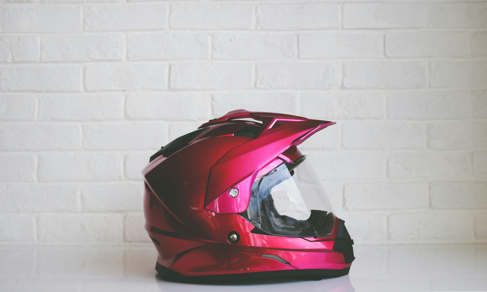
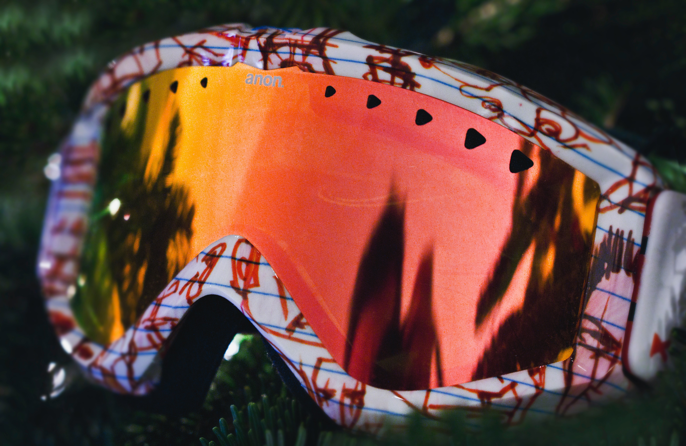
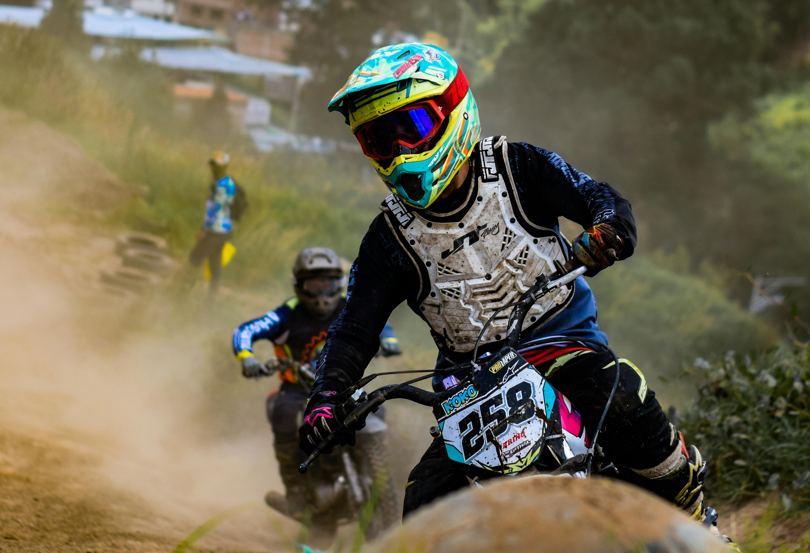
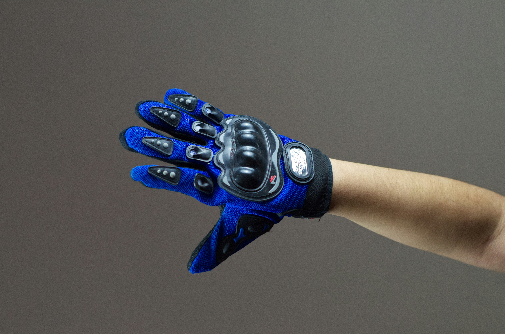
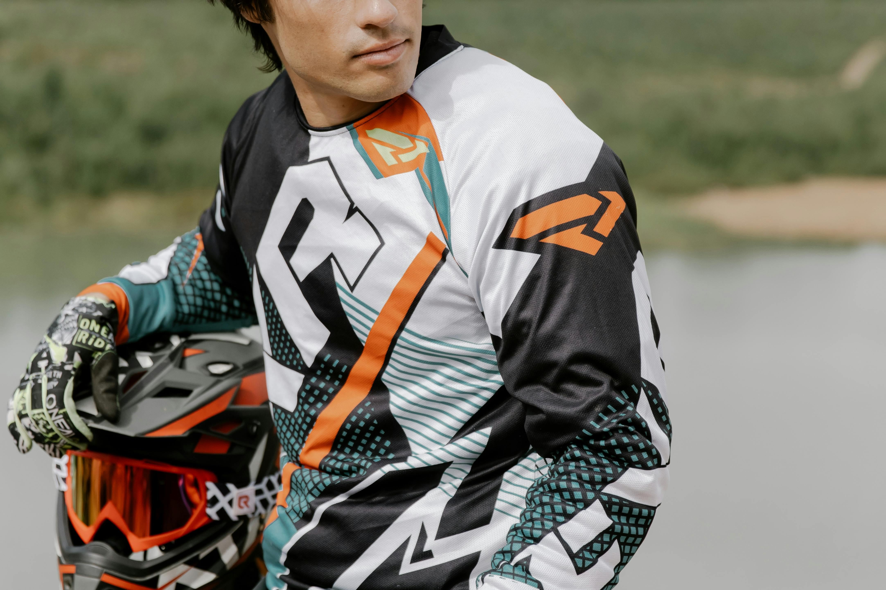
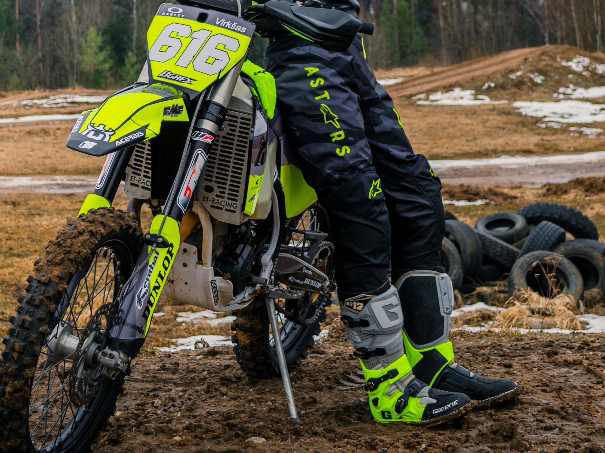
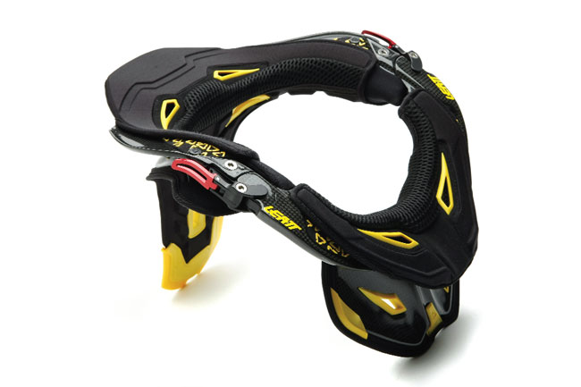

KIIVER
Krossikirjutaja jaoks on hea kiiver eluliselt oluline. Vali kiiver, mis sobib sinu pea suurusega ja pakub maksimaalset kaitset.
- Homoloogitud standart ECE 22.05
- Hea ventilatsiooni süsteem
- Mugav ja kindel istuvus

PRILLID
Kaugele nägemise ja tolmu kaitse. Investeeri kvaliteetsetesse prillides, mis pakuvad selget vaatevälka ja head kaitsefunktsiooni.
- UV-kaitse polükarbonaat läätsed
- Mugav vahtpadjestus
- Hea tuulutus

RINDKAITSE
Ühendatud rindkaitse ja seljakaitse on vajalik katteks kukkumiste ja löökide vastu, mis võivad juhtuda krossisõidul.
- EVA vaht kaitsekihid
- Hingav võrgumaterjalide sisumus
- Reguleeritavad paelad

KINDAD
Hea grep rattal ja käte kaitse. Kindad peaksid andma teile paremaid kontrolli ja närvikiirust käte vigastustes.
- Rätik käsiretuuli aladel
- Polsterdused peopesades
- Elastne seljaosa

KROSSISAAPIKUD
Vastupidavad ja teravas kaitsekuulis. Krossi saapikud peavad olema kõrged, et aidata sul säilitada optimaalse positiooni pedaalides.
- Kaitsev süsinikimp
- Tugev arkolmuutuja
- Hingav, sidemed

KROSSISÄRGID
Spetsiaalselt disainitud krossisärgid on kerged, hingavad ja vastupidavad. Hea värvivalik aitab sul rajal märgatavamaks jääda.
- Kiire kuivamise materjal
- Ergonoomne lõige
- Eritoode värvimine

KROSSIPÜKSID
Konkteetne ja tugev materjalid pakuvad igapäevast kaitseks kukumiste korral ja on suurepärane mugavust rahuldama.
- Hingav polüamiidfond
- Polsterdus põlvel ja puusall
- Elastne talje ja jalkad

KAELANE
Kaelane vähendab kukkumiste ajal kaela vigastuse riski. Eriti oluline algajatele, kes veel ei oska hästi kukkuda.
- Ergonoomne kujundus
- Kerge ja hingav
- Hea kiinnitus süsteem

RATTA HOOLDUSVAHENDID
Krossirattal peavad olema valikarvest rehvid, toimiv pidurdussüsteem ja tugev raam. Pidev hooldus on oluline.
- Kvaliteetse rehvide valik
- Reguleeritud pidurdid
- Tugev ja kerge raam
VARUSTUSE GALERII
Vaata erinevate varustuste näiteid ja inspiratsiooniks kuidas õigesti varustuda